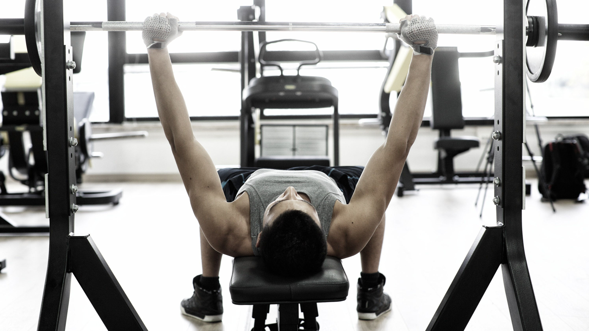

Bench Press
The bench press is a hugely popular exercise, commonly used in program design for general upper body strength and hypertrophy, as well as being a mainstay within the field of strength & conditioning. It is also the second of the three lifts contested in the sport of Powerlifting. To do a bench press, lie on a flat bench with your eyes under the bar and your feet on the ground. Grab the bar with a medium grip-width and your thumbs around the bar. Unrack the bar by straightening your arms and keep it over your shoulders. Lower the bar to your mid-chest or just below your clavicle, while keeping your elbows slightly tucked in and your chest high. Pause on your chest without bouncing the bar. Press the bar back up until your arms are straight, while flaring your elbows out and exhaling. Repeat the steps for the desired number of repetitions. This exercise can also be done wth dumbbells.
Incline Bench Press
The incline barbell bench press can be performed on a purpose-built incline bench or on an adjustable dumbbell bench in a squat/power rack. Most purpose-built incline benches are fixed at a specfic angle, whereas an adjustable bench can usually be set at different angles. To perform the incline bench press, set the bar at the most suitable height available before assuming the position. Using the preferred grip (typically a little wider than shoulder width), unrack the barbell and lower it onto the upper chest, before pushing back up and extending the elbows. Once the set is performed, re-rack the barbell. Because of the inclined position, the bar will touch higher on the chest compared to the flat bench press (i.e. closer to the clavicles), but the general cue to maintain a vertical forearm remains the same. This exercise can also be done using dumbbells.
Fly Machine
A fly machine is a resistance training device that allows you to perform the chest fly exercise. This exercise works your chest muscles, specifically the pectoralis major and minor. Grab the handles so that your palms are facing forward. Note that some machines have a foot bar that you need to push to release the handles and bring them forward. Press your arms together in front of your chest with a slow, controlled movement. Keep a slight, soft bend in the elbows with wrists relaxed. Pause for one second once your arms are fully “closed” in front of your chest. Bring your arms slowly back to the starting position, opening your chest and keeping your posture strong and upright. Repeat for desired repetitions.